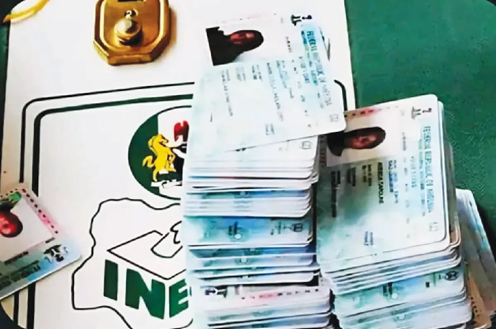

INEC to ensure PWDs aren’t excluded from 2027 elections — Official

The Independent National Electoral Commission says it is working to reduce physical, communication and procedural barriers that can prevent persons with disabilities from taking part in the 2027 general elections. Umar Gajiram, the Resident Electoral Commissioner in Gombe State, outlined the commitment through Administrative Secretary Fadimatu Bakari at a sensitisation workshop in Gombe on disability inclusion and electoral access.
Gajiram said electoral participation is a right for every Nigerian, regardless of disability. He pointed to measures including assistive materials, improved access at polling units, training for election officials and cooperation with disability organisations. He stressed that these steps must be properly communicated and used, and urged officials to consider disability access throughout their work. He also called on the commission’s Disability Desk Officer to stay in contact with disability groups and relay their concerns.
Bukar Maikwada, an assistant director for youth at INEC headquarters, said the workshop was intended to improve stakeholders’ understanding of inclusion and support the effective deployment of existing interventions. These include Braille ballot guides, written-instruction posters for deaf voters, magnifying glasses for people with visual impairment and albinism, and voter information in formats such as Braille, jingles, flyers and posters. Training, he said, would help officials decide where and when to provide the materials.
Maikwada said the commission’s work is guided by Section 54 of the Electoral Act, 2026, the Discrimination Against Persons with Disabilities (Prohibition) Act, 2018, and INEC’s framework on access and participation in elections. He called for coordination among election officials, disability organisations and their local clusters, including for voter education and mobilisation.
The workshop was also expected to help participants review previous elections, identify gaps and propose practical steps for national, state, local-government and grassroots implementation. Both officials emphasised that inclusion depends not only on making assistance available, but also on its effective delivery, communication and monitoring.
Source: Punch